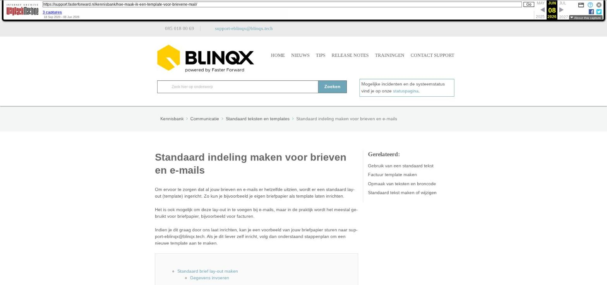

Standaard indeling maken voor brieven en e-mails

Tekstinhoud
Standaard indeling maken voor brieven en e-mails
Om ervoor te zorgen dat al jouw brieven en e-mails er hetzelfde uitzien, wordt er een standaard lay-out (template) ingericht. Zo kun je bijvoorbeeld je eigen briefpapier als template laten inrichten.
Het is ook mogelijk om deze lay-out in te voegen bij e-mails, maar in de praktijk wordt het meestal gebruikt voor briefpapier, bijvoorbeeld voor facturen.
Indien je dit graag door ons laat inrichten, kan je een voorbeeld van jouw briefpapier sturen naar support-eblinqx@blinqx.tech. Als je dit liever zelf inricht, volg dan onderstaand stappenplan om een nieuwe template aan te maken.
Standaard brief lay-out maken
Gegevens invoeren
Type communicatie
Pagina, marges en lettertype
Tekstblokken toevoegen
Aan te passen of vast
Algemene instellingen
Blok met vaste inhoud
Logo
Afwijkend lettertype en afmetingen
Voorbeeld van lay-out bekijken
Standaard template instellen
Standaard brief lay-out maken
Om een brief lay-out te maken, ga je naar Beheer – Documenten – Documenttemplate manager.
Klik op het wijzigingsicoon om een template in te zien en eventueel aan te passen.
Klik op + om een nieuwe template aan te maken.
Gegevens invoeren
Algemeen
Vul de naam van de template in. Deze naam zie je bij het selecteren van de template tijdens het aanmaken van een brief, factuur of campagne.
Het is mogelijk om de omschrijving te vullen. Bij een e-mail is dit het onderwerp. In het geval van een brief is dit de naam van de brief.
Selecteer de organisatie waarvan de medewerkers deze template mogen invoegen. Laat deze op 'alle' staan als iedereen de template mag invoegen.
Type communicatie
Geeft aan waar je de template wilt gebruiken. De volgende keuzes zijn beschikbaar (meerdere opties mogelijk):
Campagne: de template dient als basis voor een brief campagne.
Contract: de template geeft de uitkomsten van een formulier weer. De tags uit dat formulier kunnen gebruikt worden in de template.
Correspondentie: de template dient als basis voor een brief die in een dossier aangemaakt kan worden.
Factuur: de template dient als basis voor een factuur,
Makelaar object: verouderde functionaliteit, niet meer gebruiken.
Pagina, marges en lettertype
Stel de gewenste indeling in
Standaard afmetingen: kies het papierformaat
Oriëntation: kies 'Portrait' voor staand en 'Landscape' voor liggend
Marges: Geef aan in millimeters hoe ver van de rand (van het papier) de tekst mag beginnen.
Lettertype: Geef het lettertype en de lettergrootte aan.
Zodra je hierna op 'Opslaan' klikt, verschijnt er een regel met 'Blokken'.
Tekstblokken toevoegen
Onderaan kan je nu een of meerdere tekstblokken aanmaken. In dit voorbeeld is er een tekstblok ingesteld, waarin je de tekst kunt typen bij het aanmaken van de brief, een adresblok waarin standaard het adres van de klant wordt gevuld en een voetnoot. Deze blokken maak je één voor één aan.
Klik op + bij Blokken om een blok toe te voegen. Geef het blok een naam.
Aan te passen of vast
Dynamisch: voor tekstblok waarin getypt mag worden bij het aanmaken van de brief.
Statisch: voor tekstblokken met een vaste waarde, die niet aangepast mogen worden bij het aanmaken van de brief. In dit geval is het adres van de klant via een tag ingevoerd.
In onderstaand voorbeeld is 'Tekstblok 1' ingesteld als 'Dynamisch'. Er kan dus geen tekst worden ingevoerd in deze beheermodule, zoals bij 'Adres'. De tekst voor dit tekstblok wordt gevuld door de gebruiker bij het aanmaken van de brief.
Je kunt in één template meerdere dynamische tekstblokken toevoegen, maar meestal is het er maar één.
Algemene instellingen
Nieuwe pagina bij overloop: wanneer de tekst in het blok de afmetingen van het blok overschrijdt, wordt er doorgegaan op een volgende pagina. Dit is met name zo voor dynamische blokken.
Positie resetten bij overloop: wanneer de tekst te veel is voor het betreffende blok, zal er worden doorgegaan op de volgende pagina (zie vorige bullet). Met deze optie geef je aan of de positie van het blok daarbij gereset moet worden (teruggezet naar de standaard waarden).
Herhalen op elke pagina: wanneer het blok op iedere pagina getoond dient te worden, zoals een voetnoot, kan deze optie worden gebruik.
Is kopie: Van belang voor factuur templates; alleen op de kopie van de factuur zal dit blok getoond worden.
Gedeeld templateblok: Het templateblok kan ook in andere templates worden gebruikt (bijvoorbeeld het adres).
Daarna geef je de grootte en positie van het blok aan op de template.
Let op: er wordt gerekend vanaf de 'Marges' die je eerder hebt ingesteld.
Blok met vaste inhoud
Het is ook mogelijk om een statisch blok toe te voegen. Deze kan niet meer worden aangepast wanneer je de brief template gaat gebruiken.
Logo
Een andere mogelijkheid van een statisch blok is het logo. Dit logo kan beeldvullend of niet beeldvullend ingesteld worden. De afbeelding van het logo moet door middel van een URL toegevoegd worden. Om van een afbeelding een URL te maken, moet de afbeelding gehost worden. Dit kan jijzelf regelen of wij kunnen de afbeelding voor jouw hosten en omzetten naar een URL. Stuur hiervoor een e-mail naar support-eblinqx@blinqx.tech. De URL verwerk je in de template via het afbeeldingsicoon. Bij het veld URL vul je de URL in.
Afwijkend lettertype en afmetingen
Per blok kan je tevens een afwijkend lettertype instellen (zoals bij de voetnoot is gedaan). Eerder stelde je het standaard lettertype al in. Daarnaast kan je de editor breedte en hoogte in pixels instellen. Dit zijn de afmetingen zoals je deze zult zien bij het aanmaken van een brief (met deze template).
Voorbeeld van lay-out bekijken
Om de blokken grafisch weergegeven te zien, klik je op 'Voorbeeld' bovenaan de pagina. Hier kan je tevens nog slepen met de blokken om ze beter te plaatsen (binnen de marges). Door op te slaan worden de aanpassingen vastgehouden, ook wanneer je teruggaat naar 'Algemeen'.
Jouw template is nu klaar voor gebruik.
Gebruik een tweede tabblad om een dossier te openen en hierin een brief aan te maken met de nieuwe template. Door op de preview van de brief te klikken kan je een voorbeeld zien van hoe de template eruit zal komen te zien.
Standaard template instellen
In de module Beheer – Standaard template beheer is het mogelijk om voor diverse soorten standaard template in te stellen. Zo kan je bijvoorbeeld bij Correspondentie kiezen voor 'Brief met opmaak'. Wanneer je dan handmatig een brief opstelt, zal automatisch het veld 'Template' op de template 'Brief met opmaak' gezet worden.
Laatste update: 15 oktober 2025
Tagged: facturenfactuur
Was deze informatie nuttig?
Ja Nee